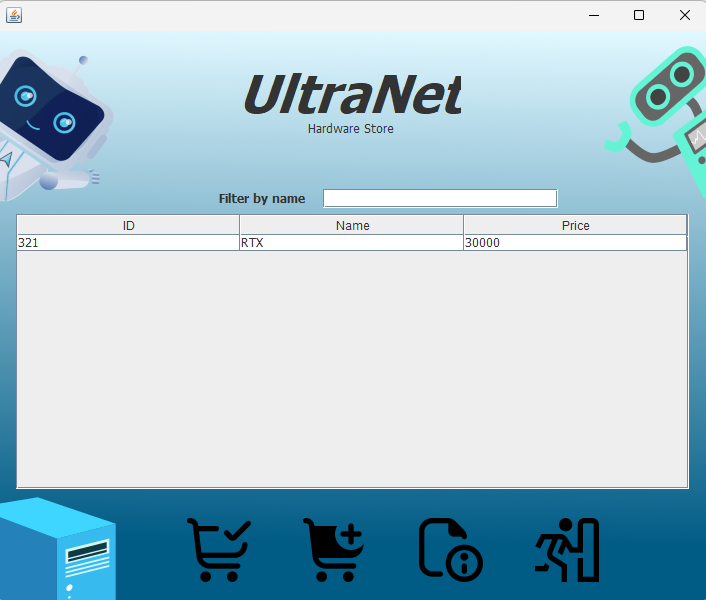
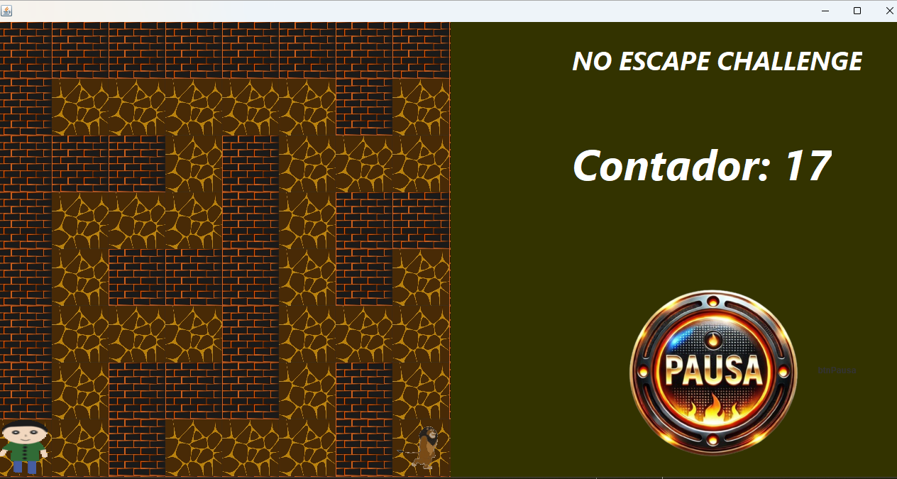
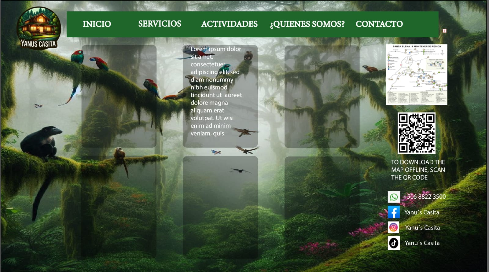
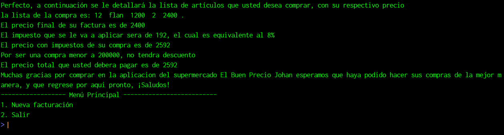

Mis Proyectos

Primer proyecto 2025
Este fue el primer proyecto realizado este año 2025 de programación
Trataba de una aplicación de ventas de artículos de computadoras
Tecnologías: Java

Laberinto
Un juego de laberinto donde el personaje debe encontrar la salida
Tiene muchos obstáculos, un enemigo y 20 segundos para completarlo
Tecnologías: Java, hilos

Página sobre Monteverde
Un ejemplo hecho en Illustrator sobre como se podría ver una página web *no terminado*
Tecnologías: Illustrator

Factura supermercado
Una aplicación simple para registrar una factura en un supermercado
Permite agregar productos, calcular total y aplicar descuentos
Fue el primer proyecto de programación que hice
Tecnologías: Pseint